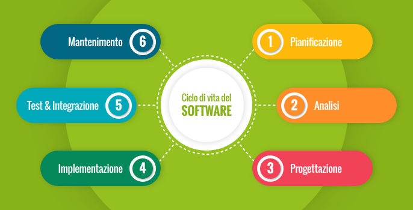

Il ciclo di vita del software (Software Development Life Cycle - SDLC)
Il ciclo di vita descrive tutte le attività che accompagnano un software dall’idea iniziale alla fine della sua vita utile. Serve a mantenere il controllo su tempi, costi, qualità e modifiche, proprio come accade in un cantiere o in una fabbrica.
Analisi e specifica dei requisiti
È il momento in cui si ascolta il cliente o l’utente finale per capire esattamente cosa vuole:
- Quali problemi deve risolvere il software?
- Quali funzionalità sono indispensabili?
- Ci sono limiti tecnici o legali da rispettare?
Si produce un documento dei requisiti, che serve da contratto tra chi sviluppa e chi paga.
Progettazione
Come un architetto disegna una casa prima di costruirla, qui si decide la struttura del software:
- Come sarà diviso in componenti?
- Come comunicheranno tra loro?
- Come sarà l’interfaccia utente?
Si utilizzano diagrammi, schemi e modelli (come l’UML) per rappresentare il progetto.
Codifica (o implementazione)
È la fase di scrittura del codice sorgente, cioè la traduzione del progetto in un linguaggio che il computer può capire (come Java, Python, C#...).
- Ogni componente viene realizzato singolarmente.
- Si seguono standard di scrittura del codice per facilitare la manutenzione futura.
Verifica e validazione
Qui si controlla che il software funzioni correttamente e risponda ai requisiti.
- Verifica: il software è stato costruito bene? (Controllo tecnico)
- Validazione: il software fa ciò che serve all’utente? (Controllo funzionale)
Si eseguono diversi tipi di test:
- Test unitari (sulle singole parti)
- Test di integrazione (sull’interazione tra le parti)
- Test di sistema (sul software completo)
- Test di accettazione (fatti dall’utente o cliente)
Distribuzione (deployment)
Una volta che il software è pronto e testato, viene rilasciato agli utenti finali:
- In azienda (installazione interna)
- Online (app, sito, servizio cloud)
Manutenzione
Anche dopo il rilascio, il lavoro non finisce. Il software va mantenuto nel tempo:
- Si correggono eventuali errori (bug fix)
- Si aggiungono nuove funzionalità
- Si adatta a nuove tecnologie (es. sistemi operativi)
La manutenzione è spesso la parte più lunga e costosa dell’intero ciclo di vita.